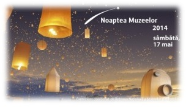

Elevii Scolii Gimnaziale "Grigore Moisil" la Noaptea Muzeelor
Editia a X- a - 17 Mai 2014
Atmosfera de sarbatoare, oameni curiosi, veniti sa participe cu mic, cu mare, la acesta sarbatoare a artei, a frumosului si-a maretiei. Noaptea Europeana a Muzeelor este un eveniment de succes initiat de Ministerul Culturii si Comunicarii din Franta si aflat deja la a zecea editie. Evenimentul este patronat, in mod traditional, de Consiliul Europei, de UNESCO si de Consiliul International al Muzeelor (ICOM). La aceste evenimente culturale prilejuite de cea de-a zecea editie a Noptii Muzeelor - vernisajul expozitiei temporare "Interferente culturale romano-bulgare la Dunarea de Jos" organizata de Muzeul Judetean de Istorie si Arheologie si expozitia "Ploiestiul vechi si nou"din cadrul Muzeului de Arta "Ion Quintus"- au participat, alaturi de parinti, elevii clasei a VI-a C si doamna profesor Necula Luminita. Vizitarea celor doua expozitii de arta a reprezentat pentru elevii nostri o evadare in lumea frumosului, a istoriei si a valorilor nationale si europene, elevii si doamna diriginta Necula Luminita marturisind ca "oamenii erau mai frumos, mai buni, mai altfel"
"